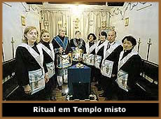

A maçonaria,
um dos últimos redutos reservados a homens,
começa a aceitar a presença de mulheres
Após conquistar a chefia de grandes empresas
e disputar eleições, as mulheres resolveram cravar
sua bandeira no seio da maçonaria, a misteriosa entidade
que sempre provocou a imaginação dos que nunca
participaram de um ritual. Tachada de demoníaca pela
Santa Inquisição e temida por quem fantasiava
orgias e práticas macabras durante suas reuniões,
a maçonaria nada mais é do que uma sociedade filantrópica,
tradicionalmente masculina, que tem por finalidade assegurar
a evolução espiritual da humanidade por meio de
ações coletivas. Para muitos maçons, reunir-se
com irmãs é uma experiência inédita.
Um dos últimos redutos masculinos, a fraternidade
vive um terrível dilema: reconhecer ou não
a legitimidade das lojas (templos) femininas e mistas, cada
vez mais comuns em todo o mundo. Enquanto o Grande Oriente (poder
supremo) da França já se acostumou com a presença
do sexo oposto, as brasileiras ainda lutam pela autenticidade
de seu trabalho. Assim explica Vera Facciollo, grã-mestra
da Ordem Glada (Grande Loja Arquitetos de Aquário), instância
máxima da maçonaria mista no Brasil, que administra
19 lojas em todo o território nacional. Nos rituais dessa
ordem, os homens são poucos. "Como as mulheres
ainda não têm muitas opções de lojas
mistas, a maioria de nossos irmãos é feminina",
justifica Vera.
Na complexa hierarquia maçônica,
os membros – tratados entre si por "irmãos"
– são divididos em "aprendizes", "companheiros"
e "mestres", conforme o grau de iniciação.
Para entrar na ordem é preciso ser convidado. Dentro
da categoria de mestre, dependendo do rito seguido, pode haver
7 ou 33 subdivisões. Todos eles costumam se reunir uma
vez por semana em templos chamados lojas, onde são planejadas
as atividades do grupo – normalmente assistenciais –
e onde se discutem temas filosóficos cabeludos como a
supremacia do espírito sobre a matéria. Toda loja
deve obediência a uma potência superior, como a
Glada. No Brasil, a maçonaria masculina está dividida
em três ordens, obedecendo a Grandes Lojas e Grandes Orientes,
e nenhuma reconhece a admissão de mulheres. O motivo
apontado é um dos artigos da Constituição
maçônica compilada em 1723 pelo escocês James
Anderson, da Grande Loja de Londres. O 18º landmark (marco),
como é conhecido, proíbe o ingresso na maçonaria
de escravos, mulheres e aleijados. "Naquela época,
as mulheres eram trocadas como se fossem animais. Manter a mulher
afastada da maçonaria até hoje contradiz todos
os ideais de liberdade, igualdade e fraternidade",
discursa Vera Facciollo. Seu marido, Antonio Facciollo, grão-mestre
adjunto da Glada, concorda com ela. "Seguir princípios
datados de 1723 é um absurdo. Mostra o atraso e o conservadorismo
da instituição", diz.
Até Arnaldo Faria, grão-mestre
do Grande Oriente paulista, superior de mais de 200 lojas no
Estado, reconhece
a proximidade da mudança. "Vamos ter de aceitar
as mulheres como irmãs", diz. No entanto, Faria
prefere lojas separadas para homens e mulheres. Lojas mistas,
para ele, são inacei-táveis. "Juntar
mulheres e homens resulta em confusão", acredita.
Além da manutenção dos antigos landmarks,
outro motivo permeia com frequência a justificativa de
certos maçons para impedir a admissão de mulheres.
"É contraditório pertencer a uma ordem
que cultua o direito à igualdade enquanto impede a admissão
de mulheres. Acredita-se, no entanto, que elas seriam incapazes
de manter segredos. Em um momento de aperto, atitudes como a
de Nicéa Pitta apareceriam", compara Edgar
Reis, companheiro da Loja Edmond Jafet, em São Paulo.
Quando fala em segredos, Reis faz referência
às atividades realizadas pela maçonaria. O mestre
Newton Milhomens explica que trabalhos assistenciais constituem
as maiores tarefas do maçom. "Nosso lema é
servir e ajudar. Muito foi feito pela maçonaria e somente
os maçons o sabem. Aí está o segredo. O
resto é folclore, e damos boas risadas com isso",
diz.
Matéria
extraída de "Isto é - Online"
(http://www.terra.com.br/istoe)
Edição
nº 1613 - 25/08/2000